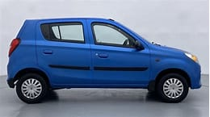
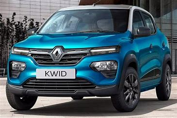
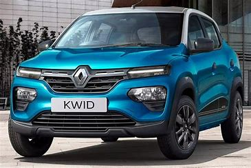

Maruti Alto 800 is a 4 seater Hatchback with the last recorded price of Rs. 3.25 - 5.12 Lakh. It is available in 10 variants, 796 cc engine option and 1 transmission option : Manual. Other key specifications of the Alto 800 include a ground clearance of 160 mm. and The Alto 800 is available in 6 colours.


Maruti Celerio is a 5-seater hatchback car with price starting from Rs. 4.99 lakh. The car is available in petrol manual, petrol automatic and cng manual configurations in 7 colours and 9 variants. The car is offered with 1 liter petrol engine. Celerio is a fuel efficient car with petrol mileage of 26.68 kmpl and CNG mileage of 34.43 km/kg.


KWID is a 5-seater hatchback car with price starting from Rs. 4.69 lakh. The car is available in petrol manual and petrol automatic configurations in 10 colours and 10 variants. The car is offered with 1 liter petrol engine. KWID is a fuel efficient car with mileage of 22.3 kmpl.
 
